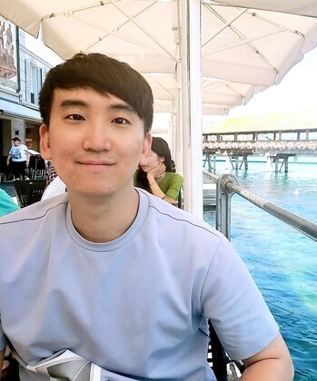
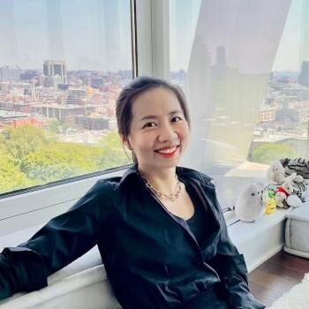
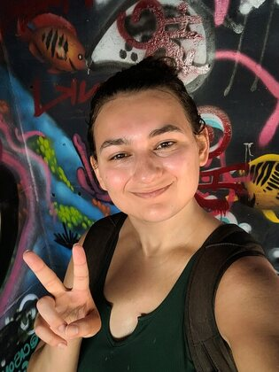
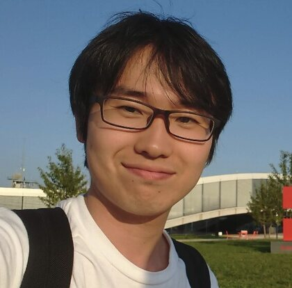
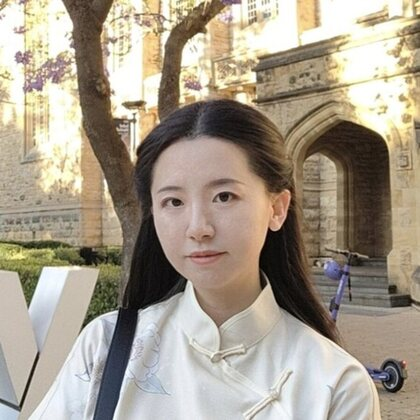

Rika Antonova
University of Cambridge
Half-day workshop at the Conference on Robot Learning 2026
Specialists and Generalists in Robot Co-Design
November 9, 2026 • Austin, Texas • In person
Large-scale robot learning can now train policies across many tasks, but most pipelines still treat the robot body as fixed. Robot co-design asks what changes when the body, controller, sensors, actuators, materials, and manufacturing constraints are chosen together.
The workshop centers on a practical question: what evidence would make us build one robot body rather than another? Robot data, world models, differentiable simulation, and policy learning may help rank candidate bodies before hardware is built. But sometimes a mechanics calculation, an optimization baseline, or a single hardware test will overturn the learned ranking.
| Time from start | Session |
|---|---|
| 0:00-0:15 | Opening and challenge framing. Specialists versus generalists, and what would count as evidence for choosing a body. |
| 0:15-1:15 | Invited talks. Four short talks, each ending with one open question for the room. |
| 1:15-1:35 | Poster pitches. Two-minute pitches from selected accepted abstracts. |
| 1:35-2:05 | Break and posters. Poster viewing and informal discussion. |
| 2:05-3:00 | Breakout groups. Small groups on benchmarks, validation, and when learned models should yield to mechanics or hardware tests. |
| 3:00-3:20 | Group report-back. Each group reports one open question and one concrete next step. |
| 3:20-3:45 | Specialist-vs.-generalist fishbowl. Moderated discussion with rotating audience seats. |
| 3:45-4:00 | Next steps and closing. Assign leads for a community report or position paper. |
These speakers have agreed to be listed for the proposal; final in-person logistics will be reconfirmed after workshop acceptance.
University of Cambridge
Duke University

Georgia Tech

Stanford University
We will invite 2-4 page extended abstracts on robotic co-design, with particular interest in work that connects embodiment choices to large-scale learning. Preliminary and negative results are welcome. Accepted contributions will appear as posters, with selected abstracts giving short pitches before the poster session. Their questions will feed the breakout sessions.
Relevant topics include learned embodiment evaluators, morphology-aware policy learning, differentiable simulation for design, hardware-control co-optimization, real-to-sim and sim-to-real validation for morphology, foundation models for robot design, and benchmarks for embodiment selection.
Submission details, reviewing criteria, and deadlines will be posted after workshop acceptance.

Université de Montréal
TU Darmstadt

UC San Diego

University of Tokyo

VU Amsterdam

University of Alberta

EPFL

University of Warsaw

VU Amsterdam

VU Amsterdam